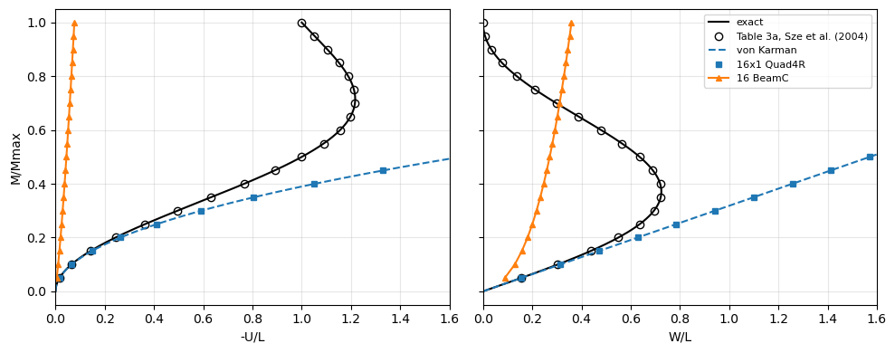
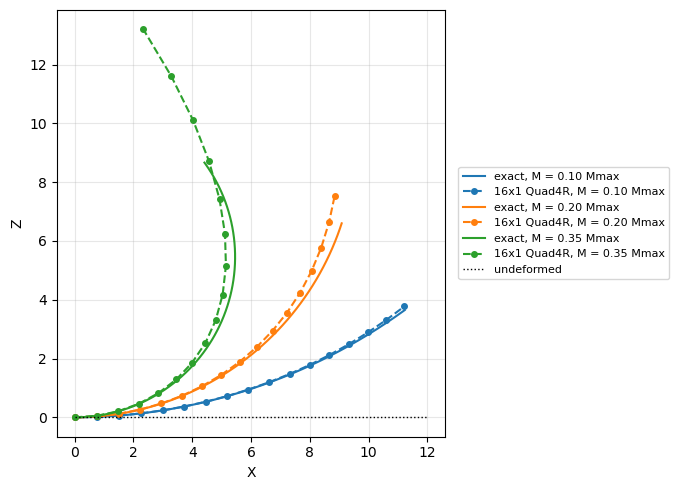
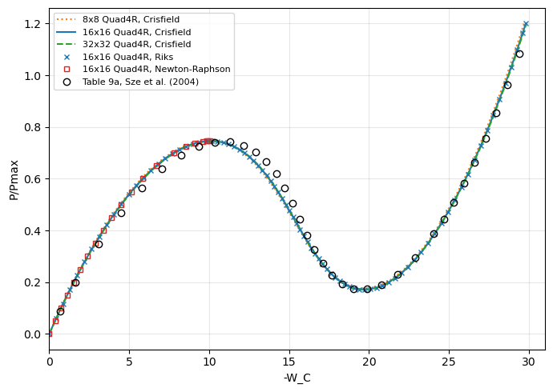
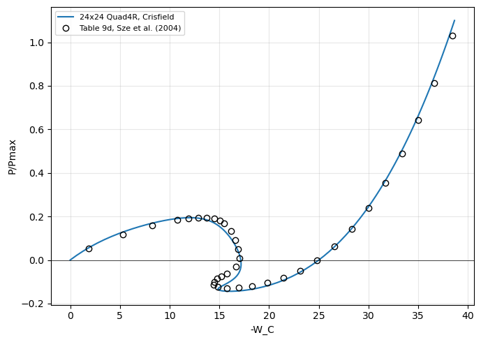
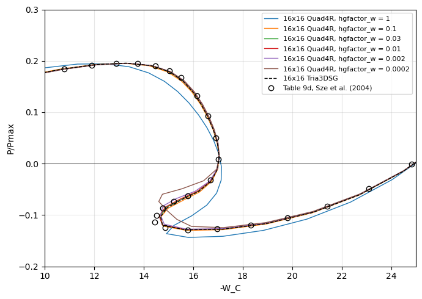
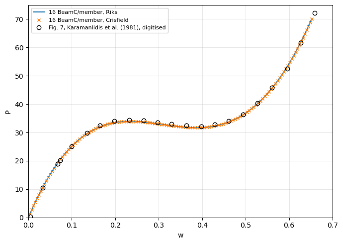

Tutorial: geometrically non-linear benchmarks with pyfe3d.solver#
Two benchmarks of Sze, K. Y., Liu, X. H. and Lo, S. H., Popular benchmark problems for geometric nonlinear analysis of shells, Finite Elements in Analysis and Design, 40(11), 1551-1569, 2004, doi:10.1016/j.finel.2003.11.001, solved with the non-linear static analyses of pyfe3d.solver.Analysis:
cantilever under an end moment (Section 3.2, Fig. 3, Table 3), with the Newton-Raphson method;
hinged cylindrical roof under a central point load (Section 3.8, Fig. 9, Tables 9a and 9d), whose snap-through, and snap-back for the thinner roof, are traced with the arc-length methods.
Sze et al. (2004) computed their reference values with ABAQUS’s S4R element, a finite-strain shell element with an updated Lagrangian formulation (their Table 1). The elements of pyfe3d use the von Karman strains, valid for small strains and moderate rotations, in a total Lagrangian formulation whose element coordinate systems are not updated. The convergence of every increment is checked with Crisfield’s criterion, the default of Analysis (convergence='crisfield', relTOL=1e-9).
The models are those of tests/test_nonlinear_benchmarks_sze2004.py, whose Model class, from tests/test_solver_nonlinear_static.py, provides the callables calc_fext, calc_fint, calc_kC and calc_kG of Analysis for a list of pyfe3d elements. A further section measures the sensitivity of the roof to the transverse hourglass stiffness of Quad4R, and a last one traces the snap-through of Williams’ toggle frame with BeamC elements. The cells below run in about
five minutes.
[1]:
import os
import sys
sys.path.insert(0, os.path.join('..', '..', 'tests'))
import numpy as np
import matplotlib.pyplot as plt
from test_nonlinear_benchmarks_sze2004 import (
CANTILEVER, TABLE_3A_EXACT, TABLE_9A, TABLE_9D, ROOF, elastica_tip,
von_karman_tip, cantilever_end_moment, run_cantilever_end_moment,
hinged_roof, run_hinged_roof, compare_with_table_9a, limit_points,
linear_roof_WC, ritz_roof_WC)
Cantilever under an end moment#
Fig. 3a of Sze et al. (2004): \(L = 12\), width \(b = 1\), thickness \(h = 0.1\), \(E = 1.2 \times 10^6\), \(\nu = 0\), \(M_o = E I/L = 25/3\) and \(M_{max} = 2 \pi M_o\). Under the end moment \(M\) the cantilever bends into a circular arc of radius \(E I/M\) and the exact tip deflections are
such that at \(M_{max}\) the cantilever is a full circle and the tip is back at the root. The text of Section 3.2 gives \(M_{max} = \pi M_o\); Fig. 3a and the exact values of Table 3a, e.g. \(-U = 12\), \(W = 0\) at \(M/M_{max} = 1\), correspond to \(M_{max} = 2 \pi M_o\), used here.
With the von Karman axial strain \(\epsilon_{xx} = u_{,x} + w_{,x}^2/2\) the free end gives a null axial force, the bending equation is that of the linear theory and
the first terms of the expansion of the exact solution in the tip rotation \(\varphi\). The von Karman cantilever never rolls up into a circle.
The cantilever is modelled with a strip of \(16 \times 1\) Quad4R elements, as the \(16 \times 1\) S4R mesh of Table 3a, and loaded in 20 equal increments of the Newton-Raphson method, initialInc = maxInc = 0.05.
[2]:
L = CANTILEVER['L']
m, U, W = run_cantilever_end_moment('Quad4R', 16, inc=0.05)
U_vk, W_vk = von_karman_tip(m)
print('Newton-Raphson, 16x1 Quad4R: %d increments' % len(m))
print()
print('%7s | %8s %8s %8s | %8s %8s %8s'
% ('', '-U_tip', '', '', 'W_tip', '', ''))
print('%7s | %8s %8s %8s | %8s %8s %8s'
% ('M/Mmax', 'Table 3a', 'v. Karm.', 'Quad4R', 'Table 3a', 'v. Karm.',
'Quad4R'))
for (mr, Ur, Wr), mi, Ui, Wi, Uv, Wv in zip(TABLE_3A_EXACT, m, U, W, U_vk,
W_vk):
assert np.isclose(mr, mi)
print('%7.2f | %8.3f %8.3f %8.3f | %8.3f %8.3f %8.3f'
% (mr, Ur, L*Uv, L*Ui, Wr, L*Wv, L*Wi))
print()
print('check: Quad4R against the von Karman solution, max relative '
'difference W %.1e, U %.1e' % (np.abs(W/W_vk - 1).max(),
np.abs(U/U_vk - 1).max()))
print('check: Quad4R against Table 3a (exact) at M/Mmax = 0.05: '
'W %+.2f %%, -U %+.2f %%'
% (100*(L*W[0]/TABLE_3A_EXACT[0, 2] - 1),
100*(L*U[0]/TABLE_3A_EXACT[0, 1] - 1)))
Newton-Raphson, 16x1 Quad4R: 20 increments
| -U_tip | W_tip
M/Mmax | Table 3a v. Karm. Quad4R | Table 3a v. Karm. Quad4R
0.05 | 0.196 0.197 0.197 | 1.870 1.885 1.885
0.10 | 0.774 0.790 0.789 | 3.648 3.770 3.770
0.15 | 1.699 1.777 1.775 | 5.248 5.655 5.655
0.20 | 2.918 3.158 3.155 | 6.598 7.540 7.540
0.25 | 4.361 4.935 4.930 | 7.639 9.425 9.425
0.30 | 5.945 7.106 7.099 | 8.333 11.310 11.310
0.35 | 7.585 9.672 9.663 | 8.664 13.195 13.195
0.40 | 9.194 12.633 12.621 | 8.637 15.080 15.080
0.45 | 10.688 15.989 15.973 | 8.281 16.965 16.965
0.50 | 12.000 19.739 19.720 | 7.639 18.850 18.850
0.55 | 13.073 23.884 23.861 | 6.775 20.735 20.735
0.60 | 13.871 28.424 28.397 | 5.758 22.619 22.619
0.65 | 14.377 33.359 33.327 | 4.665 24.504 24.504
0.70 | 14.595 38.689 38.651 | 3.571 26.389 26.389
0.75 | 14.546 44.413 44.370 | 2.546 28.274 28.274
0.80 | 14.270 50.532 50.483 | 1.650 30.159 30.159
0.85 | 13.818 57.046 56.991 | 0.926 32.044 32.044
0.90 | 13.247 63.955 63.893 | 0.405 33.929 33.929
0.95 | 12.621 71.259 71.189 | 0.098 35.814 35.814
1.00 | 12.000 78.957 78.880 | 0.000 37.699 37.699
check: Quad4R against the von Karman solution, max relative difference W 1.1e-10, U 9.8e-04
check: Quad4R against Table 3a (exact) at M/Mmax = 0.05: W +0.80 %, -U +0.61 %
The Quad4R strip reproduces the von Karman solution: the deflection exactly, the axial displacement within 0.1 %, converging with the mesh. It agrees with the exact values of Table 3a only for small tip rotations, within 1 % at \(M = 0.05 M_{max}\) (tip rotation of 0.31 rad), and departs from them beyond. The same analysis with 16 BeamC elements is plotted below.
[3]:
mb, Ub, Wb = run_cantilever_end_moment('BeamC', 16, inc=0.05)
mm = np.linspace(0, 1, 201)
Ue, We = elastica_tip(mm)
Uv, Wv = von_karman_tip(mm)
fig, axes = plt.subplots(1, 2, figsize=(10, 4), sharey=True)
for ax, label, exact, vk, quad, beam, table in [
(axes[0], '-U/L', Ue, Uv, U, Ub, TABLE_3A_EXACT[:, 1]/L),
(axes[1], 'W/L', We, Wv, W, Wb, TABLE_3A_EXACT[:, 2]/L)]:
ax.plot(exact, mm, 'k-', lw=1.5, label='exact')
ax.plot(table, TABLE_3A_EXACT[:, 0], 'ko', mfc='none',
label='Table 3a, Sze et al. (2004)')
ax.plot(vk, mm, 'C0--', lw=1.5, label='von Karman')
ax.plot(quad, m, 'C0s', ms=5, label='16x1 Quad4R')
ax.plot(beam, mb, 'C1^-', ms=5, label='16 BeamC')
ax.set_xlabel(label)
ax.set_xlim(0, 1.6)
ax.grid(True, alpha=0.3)
axes[0].set_ylabel('M/Mmax')
axes[1].legend(loc='upper right', fontsize=8)
plt.tight_layout()
plt.show()

The deformed cantilever at \(M = 0.1 M_{max}\), \(0.2 M_{max}\) and \(0.35 M_{max}\), the last one the first configuration of Fig. 3c of Sze et al. (2004): the exact circular arcs and the edge \(y = 0\) of the Quad4R strip, both without amplification.
[4]:
model, bu, tip_deflections, Mmax = cantilever_end_moment('Quad4R', 16)
an = model.analysis(bu, NL_method='NR', initialInc=0.05, maxInc=0.05)
increments, cs = an.static(NLgeom=True, silent=True)
x = model.x.reshape(-1, 3)
edge = np.isclose(x[:, 1], 0.)
s = np.linspace(0, L, 200)
fig, ax = plt.subplots(figsize=(8, 5))
for k, (frac, color) in enumerate([(0.1, 'C0'), (0.2, 'C1'), (0.35, 'C2')]):
i = int(np.argmin(np.abs(np.array(increments) - frac)))
u = cs[i].reshape(-1, 6)
radius = L/(2*np.pi*frac)
ax.plot(radius*np.sin(s/radius), radius*(1 - np.cos(s/radius)), '-',
color=color, lw=1.5, label='exact, M = %.2f Mmax' % frac)
ax.plot(x[edge, 0] + u[edge, 0], x[edge, 2] + u[edge, 2], 'o--',
color=color, ms=4, label='16x1 Quad4R, M = %.2f Mmax' % frac)
ax.plot([0, L], [0, 0], 'k:', lw=1, label='undeformed')
ax.set_aspect('equal')
ax.set_xlabel('X')
ax.set_ylabel('Z')
ax.grid(True, alpha=0.3)
ax.legend(fontsize=8, loc='center left', bbox_to_anchor=(1.02, 0.5))
plt.tight_layout()
plt.show()

The beam elements BeamC and BeamLR interpolate the axial displacement linearly and integrate the von Karman axial strain with Gauss points along the element, where \(w_{,x}^2\) is not constant: the axial strain cannot vanish in the element and the cantilever is too stiff (membrane locking). The stiffening grows with the moment and decreases with the number of elements; at \(M = 0.05 M_{max}\):
[5]:
print('%-7s %9s %10s %12s %10s' % ('element', 'elements', 'W_tip',
'von Karman', 'error %'))
for name in ['BeamC', 'BeamLR']:
for n in [16, 64, 256]:
mi, Ui, Wi = run_cantilever_end_moment(name, n, inc=0.25, m_max=0.05)
Wv = von_karman_tip(mi[-1])[1]
print('%-7s %9d %10.4f %12.4f %10.2f'
% (name, n, L*Wi[-1], L*Wv, 100*(Wi[-1]/Wv - 1)))
print('Table 3a (exact) at M/Mmax = 0.05: W_tip %.3f' % TABLE_3A_EXACT[0, 2])
element elements W_tip von Karman error %
BeamC 16 1.0636 1.8850 -43.57
BeamC 64 1.6477 1.8850 -12.59
BeamC 256 1.8621 1.8850 -1.21
BeamLR 16 1.0637 1.8850 -43.57
BeamLR 64 1.6477 1.8850 -12.59
BeamLR 256 1.8621 1.8850 -1.21
Table 3a (exact) at M/Mmax = 0.05: W_tip 1.870
Hinged cylindrical roof, 12.7 thick#
Fig. 9a of Sze et al. (2004): cylindrical roof of radius \(R = 2540\), length \(2L\) with \(L = 254\) along the axis, opening \(2\theta\) with \(\theta = 0.1\) rad, thickness \(h = 12.7\), \(E = 3102.75\), \(\nu = 0.3\), central point load \(P\) with \(P_{max} = 3000\). The straight edges are hinged, with all the translations restrained, the curved edges are free. One quarter is modelled, with symmetry conditions on the planes through the centre C, as in Sze et al. (2004), who used \(16 \times 16\) S4R elements and Riks’ method (Table 9a).
Here one quarter is meshed with \(16 \times 16\) flat Quad4R elements and the path is traced with Crisfield’s arc-length method up to \(1.2 P_{max}\), with the arc-length increment of initialInc = maxInc = 0.05. The load factor decreases past the limit points, where the tangent stiffness matrix is singular, which the Newton-Raphson method cannot pass.
[6]:
P16, W16 = run_hinged_roof(n=16, NL_method='arc_length_crisfield')
P_riks, W_riks = run_hinged_roof(n=16, NL_method='arc_length_riks')
P_nr, W_nr = run_hinged_roof(n=16, NL_method='NR', load_factor=1.)
print("Crisfield's arc-length method: %d increments, P/Pmax %.3f at -W_C %.3f"
% (len(P16) - 1, P16[-1], W16[-1]))
print("Riks' arc-length method: %d increments, P/Pmax %.3f at -W_C %.3f"
% (len(P_riks) - 1, P_riks[-1], W_riks[-1]))
print('Newton-Raphson: %d increments, stops at P/Pmax %.4f, -W_C %.3f'
% (len(P_nr) - 1, P_nr[-1], W_nr[-1]))
P_calc = compare_with_table_9a(P16, W16)
P_riks_calc = compare_with_table_9a(P_riks, W_riks)
print()
print('%8s %10s %10s %10s %10s' % ('-W_C', 'Table 9a', 'pyfe3d', 'diff',
'diff %'))
for (Pr, Wr), Pc in zip(TABLE_9A, P_calc):
print('%8.3f %10.4f %10.4f %+10.4f %+10.2f'
% (Wr, Pr, Pc, Pc - Pr, 100*(Pc - Pr)/Pr))
print()
(Pa, Wa), (Pb, Wb) = limit_points(P16, W16, 15.)
(Pa_r, Wa_r), (Pb_r, Wb_r) = limit_points(TABLE_9A[:, 0], TABLE_9A[:, 1], 15.)
print('%-18s %16s %16s' % ('', 'Table 9a', 'pyfe3d'))
print('%-18s %7.4f at %5.2f %7.4f at %5.2f %+6.2f %%'
% ('upper limit point', Pa_r, Wa_r, Pa, Wa, 100*(Pa/Pa_r - 1)))
print('%-18s %7.4f at %5.2f %7.4f at %5.2f %+6.2f %%'
% ('lower limit point', Pb_r, Wb_r, Pb, Wb, 100*(Pb/Pb_r - 1)))
print()
print("check: Riks' and Crisfield's methods, max difference of P/Pmax at the "
"deflections of Table 9a %.1e" % np.abs(P_riks_calc - P_calc).max())
Crisfield's arc-length method: 84 increments, P/Pmax 1.200 at -W_C 29.800
Riks' arc-length method: 84 increments, P/Pmax 1.200 at -W_C 29.800
Newton-Raphson: 20 increments, stops at P/Pmax 0.7459, -W_C 10.033
-W_C Table 9a pyfe3d diff diff %
0.693 0.0877 0.0941 +0.0064 +7.33
1.638 0.1980 0.2126 +0.0146 +7.39
3.087 0.3473 0.3718 +0.0245 +7.06
4.477 0.4686 0.4991 +0.0305 +6.50
5.802 0.5647 0.5971 +0.0324 +5.74
7.057 0.6381 0.6686 +0.0305 +4.78
8.237 0.6908 0.7158 +0.0250 +3.62
9.339 0.7246 0.7407 +0.0161 +2.22
10.358 0.7412 0.7449 +0.0037 +0.50
11.293 0.7421 0.7315 -0.0106 -1.43
12.141 0.7286 0.7027 -0.0259 -3.56
12.903 0.7023 0.6618 -0.0405 -5.76
13.583 0.6649 0.6132 -0.0517 -7.78
14.188 0.6182 0.5600 -0.0582 -9.42
14.728 0.5643 0.5064 -0.0579 -10.27
15.217 0.5055 0.4545 -0.0510 -10.10
15.676 0.4442 0.4050 -0.0392 -8.83
16.125 0.3830 0.3580 -0.0250 -6.53
16.590 0.3245 0.3129 -0.0116 -3.56
17.094 0.2717 0.2701 -0.0016 -0.60
17.657 0.2272 0.2313 +0.0041 +1.78
18.299 0.1940 0.1991 +0.0051 +2.63
19.028 0.1750 0.1776 +0.0026 +1.50
19.852 0.1729 0.1719 -0.0010 -0.56
20.771 0.1905 0.1857 -0.0048 -2.51
21.780 0.2303 0.2235 -0.0068 -2.95
22.875 0.2950 0.2879 -0.0071 -2.41
24.049 0.3871 0.3827 -0.0044 -1.13
24.663 0.4443 0.4426 -0.0017 -0.39
25.293 0.5093 0.5105 +0.0012 +0.24
25.940 0.5826 0.5879 +0.0053 +0.92
26.601 0.6644 0.6741 +0.0097 +1.46
27.276 0.7551 0.7704 +0.0153 +2.03
27.964 0.8549 0.8766 +0.0217 +2.54
28.663 0.9643 0.9928 +0.0285 +2.96
29.374 1.0835 1.1199 +0.0364 +3.36
Table 9a pyfe3d
upper limit point 0.7421 at 11.29 0.7459 at 10.16 +0.51 %
lower limit point 0.1729 at 19.85 0.1713 at 19.74 -0.92 %
check: Riks' and Crisfield's methods, max difference of P/Pmax at the deflections of Table 9a 1.3e-09
The pyfe3d values are interpolated linearly along the computed path at the deflections of Table 9a, and the limit points of Table 9a are its largest and smallest tabulated loads (the table samples the path, the limit points may lie between its points). Both arc-length methods trace the same path, and the Newton-Raphson method stops at the upper limit point.
The limit loads agree within about 1 % with Table 9a. Along the path the differences are larger: pyfe3d is about 7 % stiffer at the start of the path and the descending branch lies below the reference values by up to about 0.06 \(P_{max}\). Most of the stiffening at the start of the path comes from the transverse hourglass stiffness of Quad4R, see the last section. The mesh convergence of the pyfe3d path is shown below,
comparing \(8 \times 8\), \(16 \times 16\) and \(32 \times 32\) meshes, the last one with a larger arc-length increment.
[7]:
P8, W8 = run_hinged_roof(n=8)
P32, W32 = run_hinged_roof(n=32, initialInc=0.1, maxInc=0.1)
for n, (P, W) in [(8, (P8, W8)), (16, (P16, W16)), (32, (P32, W32))]:
(Pa, Wa), (Pb, Wb) = limit_points(P, W, 15.)
Pc = compare_with_table_9a(P, W)
print('%2dx%-2d Quad4R: limit loads %.4f, %.4f; P/Pmax at -W_C = %.3f: '
'%.4f (Table 9a %.4f)' % (n, n, Pa, Pb, TABLE_9A[0, 1], Pc[0],
TABLE_9A[0, 0]))
fig, ax = plt.subplots(figsize=(7, 5))
ax.plot(W8, P8, 'C1:', lw=1.5, label='8x8 Quad4R, Crisfield')
ax.plot(W16, P16, 'C0-', lw=1.5, label='16x16 Quad4R, Crisfield')
ax.plot(W32, P32, 'C2--', lw=1.5, label='32x32 Quad4R, Crisfield')
ax.plot(W_riks, P_riks, 'C0x', ms=5, label='16x16 Quad4R, Riks')
ax.plot(W_nr, P_nr, 'C3s', ms=5, mfc='none', label='16x16 Quad4R, Newton-Raphson')
ax.plot(TABLE_9A[:, 1], TABLE_9A[:, 0], 'ko', mfc='none',
label='Table 9a, Sze et al. (2004)')
ax.set_xlabel('-W_C')
ax.set_ylabel('P/Pmax')
ax.set_xlim(0, 31)
ax.grid(True, alpha=0.3)
ax.legend(fontsize=8, loc='upper left')
plt.tight_layout()
plt.show()
8x8 Quad4R: limit loads 0.7467, 0.1753; P/Pmax at -W_C = 0.693: 0.0957 (Table 9a 0.0877)
16x16 Quad4R: limit loads 0.7459, 0.1713; P/Pmax at -W_C = 0.693: 0.0941 (Table 9a 0.0877)
32x32 Quad4R: limit loads 0.7446, 0.1704; P/Pmax at -W_C = 0.693: 0.0931 (Table 9a 0.0877)

Hinged cylindrical roof, 6.35 thick#
The same roof with half the thickness, \(h = 6.35\), Table 9d of Sze et al. (2004), computed with \(24 \times 24\) S4R elements on one quarter. Past the upper limit point the load becomes negative and the path turns back in the deflection (snap-back) twice before stiffening. One quarter with \(24 \times 24\) Quad4R elements, Crisfield’s arc-length method up to \(1.1 P_{max}\) with initialInc = maxInc = 0.02.
[8]:
P, W = run_hinged_roof(n=24, h=6.35, load_factor=1.1, initialInc=0.02,
maxInc=0.02)
print("Crisfield's arc-length method: %d increments, P/Pmax %.3f at -W_C %.3f"
% (len(P) - 1, P[-1], W[-1]))
dW = np.diff(W)
turns = np.flatnonzero(np.sign(dW[1:]) != np.sign(dW[:-1])) + 1
print('turning points of -W_C (snap-back): %s' % ', '.join(
'P/Pmax %.4f at -W_C %.3f' % (P[i], W[i]) for i in turns))
(Pa, Wa), _ = limit_points(P, W, 13.5)
(Pa_r, Wa_r), _ = limit_points(TABLE_9D[:, 0], TABLE_9D[:, 1], 13.5)
i_min, i_min_r = np.argmin(P), np.argmin(TABLE_9D[:, 0])
print()
print('%-18s %16s %16s' % ('', 'Table 9d', 'pyfe3d'))
print('%-18s %7.4f at %5.2f %7.4f at %5.2f %+6.2f %%'
% ('upper limit point', Pa_r, Wa_r, Pa, Wa, 100*(Pa/Pa_r - 1)))
print('%-18s %7.4f at %5.2f %7.4f at %5.2f %+6.2f %%'
% ('lower limit point', TABLE_9D[i_min_r, 0], TABLE_9D[i_min_r, 1],
P[i_min], W[i_min], 100*(P[i_min]/TABLE_9D[i_min_r, 0] - 1)))
fig, ax = plt.subplots(figsize=(7, 5))
ax.plot(W, P, 'C0-', lw=1.5, label='24x24 Quad4R, Crisfield')
ax.plot(TABLE_9D[:, 1], TABLE_9D[:, 0], 'ko', mfc='none',
label='Table 9d, Sze et al. (2004)')
ax.axhline(0, color='k', lw=0.5)
ax.set_xlabel('-W_C')
ax.set_ylabel('P/Pmax')
ax.grid(True, alpha=0.3)
ax.legend(fontsize=8, loc='upper left')
plt.tight_layout()
plt.show()
Crisfield's arc-length method: 117 increments, P/Pmax 1.100 at -W_C 38.648
turning points of -W_C (snap-back): P/Pmax -0.0139 at -W_C 17.186, P/Pmax -0.1336 at -W_C 14.850
Table 9d pyfe3d
upper limit point 0.1953 at 12.89 0.1944 at 12.02 -0.47 %
lower limit point -0.1288 at 15.78 -0.1436 at 16.24 +11.53 %

The upper limit load agrees with the largest load of Table 9d within 0.5 %; the lower limit load of pyfe3d, negative, is lower than the smallest load of Table 9d, by about 0.015 \(P_{max}\).
Sensitivity to the transverse hourglass stiffness of Quad4R#
Quad4R integrates its stiffness with one point at the centroid and controls the hourglass modes with the artificial stiffnesses of Brockman, R. A., Dynamics of the bilinear Mindlin plate element, International Journal for Numerical Methods in Engineering, 24(12), 2343-2356, 1987, doi:10.1002/nme.1620241208, see the Notes of pyfe3d.quad4r. The transverse one keeps Brockman’s factor \(1/(1 + 1/A)\), \(A\) being the element area,
with \(f_w\) = hgfactor_w, 1 by default. The elements of the quarter of the roof have areas from 16 (\(64 \times 64\)) to 1008 (\(8 \times 8\)) in the unit of length of the model, so that the default \(E^{(h)}_w\) is 0.94 to 1.0 times \(0.1 E h^3\). The hourglass operator cannot distinguish the spurious pattern \(w = x y\) from a twist curvature, and this stiffness also stiffens the twist, by the ratio \(3 E^{(h)}_w/(E h^3)\), about 30 % here. As documented in
pyfe3d.quad4r, the amount of hourglass stiffness that is acceptable depends on the problem. The default follows the references documented there and is used in all the comparisons with Sze et al. (2004) above. The values of hgfactor_w below measure the sensitivity of this problem only: none of them is a recommendation, and new default values would require more studies.
Two references without hourglass control are used:
Tria3DSG, with the same meshes split into two triangles per quadrilateral;the linear shallow-shell (Donnell-Marguerre) Kirchhoff solution of
ritz_roof_WC, a Ritz method with the Legendre-based functions of Castro, S. G. P. and Donadon, M. V., Composite Structures, 160, 232-247, 2017, doi:10.1016/j.compstruct.2016.10.026,mfunctions per direction for each of \(u\), \(v\) and \(w\). It has no transverse shear deformation, so the finite elements are compared with it with their transverse shear stiffnesses \(A_{44}\), \(A_{45}\) and \(A_{55}\) multiplied by 100 (shear_factor=100.ofhinged_roof).
The linear deflection \(-W_C\) of the 12.7 thick roof under \(P_{max}\):
[9]:
HGFACTORS = [1., 0.1, 0.03, 0.01, 0.002, 0.0002]
MESHES = [16, 32, 64]
W_ritz = {m: ritz_roof_WC(m) for m in (20, 30)}
print('shallow-shell Kirchhoff Ritz solution: -W_C %.4f (m = 20), %.4f '
'(m = 30)' % (W_ritz[20], W_ritz[30]))
rows = [('Tria3DSG', dict(element='Tria3DSG'))] + [
('Quad4R, hgfactor_w = %g' % hg, dict(hgfactor_w=hg)) for hg in HGFACTORS]
for shear_factor, ref_name in [(1., 'Tria3DSG'), (100., 'Ritz')]:
W_lin = {name: [linear_roof_WC(n, shear_factor=shear_factor, **kw)
for n in MESHES] for name, kw in rows}
ref = (W_lin['Tria3DSG'][-1] if ref_name == 'Tria3DSG'
else W_ritz[30])
print()
print('linear -W_C under P_max, h = 12.7, transverse shear stiffness '
'x%g' % shear_factor)
print('%-28s' % '' + ''.join('%9s' % ('%dx%d' % (n, n)) for n in MESHES)
+ ' 64x64 vs %s' % ref_name)
for name, _ in rows:
Wn = W_lin[name]
print('%-28s' % name + ''.join('%9.4f' % Wi for Wi in Wn)
+ ' %+8.2f %%' % (100*(Wn[-1]/ref - 1)))
shallow-shell Kirchhoff Ritz solution: -W_C 7.4798 (m = 20), 7.4801 (m = 30)
linear -W_C under P_max, h = 12.7, transverse shear stiffness x1
16x16 32x32 64x64 64x64 vs Tria3DSG
Tria3DSG 7.5480 7.6295 7.6733 +0.00 %
Quad4R, hgfactor_w = 1 7.0949 7.1372 7.1668 -6.60 %
Quad4R, hgfactor_w = 0.1 7.5543 7.6061 7.6255 -0.62 %
Quad4R, hgfactor_w = 0.03 7.6170 7.6698 7.6882 +0.19 %
Quad4R, hgfactor_w = 0.01 7.6494 7.7026 7.7206 +0.62 %
Quad4R, hgfactor_w = 0.002 7.6825 7.7378 7.7557 +1.07 %
Quad4R, hgfactor_w = 0.0002 7.7031 7.7816 7.8003 +1.65 %
linear -W_C under P_max, h = 12.7, transverse shear stiffness x100
16x16 32x32 64x64 64x64 vs Ritz
Tria3DSG 7.3996 7.4626 7.4795 -0.01 %
Quad4R, hgfactor_w = 1 6.9602 7.0050 7.0348 -5.95 %
Quad4R, hgfactor_w = 0.1 7.3562 7.4083 7.4272 -0.71 %
Quad4R, hgfactor_w = 0.03 7.3940 7.4469 7.4646 -0.21 %
Quad4R, hgfactor_w = 0.01 7.4050 7.4583 7.4756 -0.06 %
Quad4R, hgfactor_w = 0.002 7.4095 7.4630 7.4802 +0.00 %
Quad4R, hgfactor_w = 0.0002 7.4105 7.4641 7.4815 +0.02 %
With the actual transverse shear stiffness the default Quad4R meshes are 6.0 to 6.6 % stiffer than the Tria3DSG meshes of the same size, and decreasing hgfactor_w increases \(-W_C\) monotonically. From hgfactor_w = 0.03 down the Quad4R meshes are more flexible than Tria3DSG, whose deflection still grows with the mesh, by 1.1 % and 0.6 % for each refinement, so that this comparison has no converged reference.
With the transverse shear stiffnesses multiplied by 100 the comparison has one: the Ritz solution converges to \(-W_C = 7.480\) and the \(64 \times 64\) Tria3DSG mesh agrees with it within 0.01 %. The default Quad4R mesh is 6.0 % stiffer, and the deflection approaches the Ritz solution monotonically as hgfactor_w decreases, within 0.7 % with 0.1 and 0.06 % with 0.01.
The limit loads of the non-linear paths, with \(16 \times 16\) meshes, the arc-length increments of test_hinged_roof_thick (0.05) for both thicknesses and the load at the first point of Tables 9a and 9d, interpolated along the rising part of the path:
[10]:
cases = [('Quad4R, hgfactor_w = %g' % hg, dict(hgfactor_w=hg))
for hg in HGFACTORS] + [('Tria3DSG', dict(element='Tria3DSG'))]
paths_thick, paths_thin = {}, {}
for name, kw in cases:
if kw.get('hgfactor_w') == 1.:
# NOTE the path of the 12.7 thick roof with the default, see above
paths_thick[name] = (P16, W16)
else:
paths_thick[name] = run_hinged_roof(n=16, **kw)
paths_thin[name] = run_hinged_roof(n=16, h=6.35, load_factor=1.1, **kw)
def first_point(P, W, table):
# NOTE -W_C increases monotonically up to the upper limit point
rising = W < 10.
return np.interp(table[0, 1], W[rising], P[rising])
(Pa_r, _), (Pb_r, _) = limit_points(TABLE_9A[:, 0], TABLE_9A[:, 1], 15.)
print('h = 12.7, 16x16, P/Pmax: upper and lower limit loads, load at the '
'first point of Table 9a')
print('%-28s %9s %9s %9s' % ('', 'upper', 'lower', 'first'))
print('%-28s %9.4f %9.4f %9.4f' % ('Table 9a', Pa_r, Pb_r, TABLE_9A[0, 0]))
for name, (P_, W_) in paths_thick.items():
(Pa, _), (Pb, _) = limit_points(P_, W_, 15.)
print('%-28s %9.4f %9.4f %9.4f' % (name, Pa, Pb,
first_point(P_, W_, TABLE_9A)))
(Pa_r, _), _ = limit_points(TABLE_9D[:, 0], TABLE_9D[:, 1], 13.5)
print()
print('h = 6.35, 16x16, P/Pmax: upper and lower limit loads, load at the '
'first point of Table 9d')
print('%-28s %9s %9s %9s' % ('', 'upper', 'lower', 'first'))
print('%-28s %9.4f %9.4f %9.4f' % ('Table 9d', Pa_r, TABLE_9D[:, 0].min(),
TABLE_9D[0, 0]))
for name, (P_, W_) in paths_thin.items():
(Pa, _), _ = limit_points(P_, W_, 13.5)
print('%-28s %9.4f %9.4f %9.4f' % (name, Pa, P_.min(),
first_point(P_, W_, TABLE_9D)))
fig, ax = plt.subplots(figsize=(7, 5))
for (name, (P_, W_)), style in zip(paths_thin.items(),
['C0-', 'C1-', 'C2-', 'C3-', 'C4-', 'C5-',
'k--']):
ax.plot(W_, P_, style, lw=1., label='16x16 ' + name)
ax.plot(TABLE_9D[:, 1], TABLE_9D[:, 0], 'ko', mfc='none',
label='Table 9d, Sze et al. (2004)')
ax.axhline(0, color='k', lw=0.5)
ax.set_xlabel('-W_C')
ax.set_ylabel('P/Pmax')
ax.set_xlim(10, 25)
ax.set_ylim(-0.2, 0.3)
ax.grid(True, alpha=0.3)
ax.legend(fontsize=8, loc='upper right')
plt.tight_layout()
plt.show()
h = 12.7, 16x16, P/Pmax: upper and lower limit loads, load at the first point of Table 9a
upper lower first
Table 9a 0.7421 0.1729 0.0877
Quad4R, hgfactor_w = 1 0.7459 0.1713 0.0941
Quad4R, hgfactor_w = 0.1 0.7427 0.1684 0.0884
Quad4R, hgfactor_w = 0.03 0.7422 0.1682 0.0877
Quad4R, hgfactor_w = 0.01 0.7420 0.1681 0.0873
Quad4R, hgfactor_w = 0.002 0.7413 0.1681 0.0869
Quad4R, hgfactor_w = 0.0002 0.7379 0.1690 0.0867
Tria3DSG 0.7420 0.1679 0.0884
h = 6.35, 16x16, P/Pmax: upper and lower limit loads, load at the first point of Table 9d
upper lower first
Table 9d 0.1953 -0.1288 0.0517
Quad4R, hgfactor_w = 1 0.1944 -0.1435 0.0558
Quad4R, hgfactor_w = 0.1 0.1954 -0.1299 0.0526
Quad4R, hgfactor_w = 0.03 0.1954 -0.1286 0.0523
Quad4R, hgfactor_w = 0.01 0.1954 -0.1282 0.0521
Quad4R, hgfactor_w = 0.002 0.1953 -0.1274 0.0520
Quad4R, hgfactor_w = 0.0002 0.1952 -0.1243 0.0520
Tria3DSG 0.1956 -0.1287 0.0524

For both thicknesses the default makes the start of the path stiffer, by 7 % (\(h = 12.7\)) and 8 % (\(h = 6.35\)) at the first point of the tables, whereas the reduced values of hgfactor_w and Tria3DSG are within 1.8 % of it. The upper limit loads agree within 0.6 % with the tables for all the values of hgfactor_w. The lower limit loads behave differently: for \(h = 12.7\) the default is the closest to Table 9a (-0.9 %), the reduced values and Tria3DSG being 2.3 to
2.9 % below it; for \(h = 6.35\) the default is 0.015 \(P_{max}\) below Table 9d, while the values of hgfactor_w from 0.1 to 0.002 and Tria3DSG are within 0.0014 \(P_{max}\), and 0.0002 is 0.0045 \(P_{max}\) above it.
The smaller values of hgfactor_w leave the hourglass pattern of \(w\) with little stiffness, and the path then depends more on the mesh and on the increments: with the \(24 \times 24\) mesh and the arc-length increment of 0.02 used above for Table 9d, hgfactor_w = 0.002 gives another path after the upper limit point:
[11]:
P24_002, W24_002 = run_hinged_roof(n=24, h=6.35, load_factor=1.1,
initialInc=0.02, maxInc=0.02,
hgfactor_w=0.002)
(Pa, _), _ = limit_points(P24_002, W24_002, 13.5)
print('24x24 Quad4R, hgfactor_w = 0.002: upper and lower limit loads %.4f, '
'%.4f; Table 9d: %.4f, %.4f' % (Pa, P24_002.min(), Pa_r,
TABLE_9D[:, 0].min()))
for name, (P_, W_) in [('hgfactor_w = 1, above', (P, W)),
('hgfactor_w = 0.002', (P24_002, W24_002)),
('Table 9d', (TABLE_9D[:, 0], TABLE_9D[:, 1]))]:
dW = np.diff(W_)
turns = np.flatnonzero(np.sign(dW[1:]) != np.sign(dW[:-1])) + 1
print('%-22s turning points of -W_C: %s' % (name, ', '.join(
'P/Pmax %.4f at -W_C %.3f' % (P_[i], W_[i]) for i in turns)))
24x24 Quad4R, hgfactor_w = 0.002: upper and lower limit loads 0.1948, -0.1112; Table 9d: 0.1953, -0.1288
hgfactor_w = 1, above turning points of -W_C: P/Pmax -0.0139 at -W_C 17.186, P/Pmax -0.1336 at -W_C 14.850
hgfactor_w = 0.002 turning points of -W_C: P/Pmax 0.0478 at -W_C 16.778, P/Pmax -0.0343 at -W_C 13.970
Table 9d turning points of -W_C: P/Pmax 0.0083 at -W_C 17.008, P/Pmax -0.1142 at -W_C 14.451
This path turns back in \(-W_C\) for the first time at 0.0478 \(P_{max}\), against 0.0083 \(P_{max}\) in Table 9d and -0.0139 \(P_{max}\) with the default, and its lower limit load is 0.018 \(P_{max}\) above the smallest load of Table 9d, whereas with the \(16 \times 16\) mesh and the increment of 0.05 the same hgfactor_w was within 0.0014 \(P_{max}\).
The sensitivity is therefore not a single trend: reducing hgfactor_w removes the excess stiffness of the linear response and of the start of the non-linear path, and, in the Kirchhoff limit, converges to the independent solution, but it does not improve every result of the non-linear paths and it makes them depend more on the mesh and on the increments. The assertions of the linear trend are in test_hinged_roof_hourglass_sensitivity.
Williams’ toggle frame#
The toggle frame of Williams, F. W., An approach to the non-linear behaviour of the members of a rigid jointed plane framework with finite deflections, The Quarterly Journal of Mechanics and Applied Mathematics, 17(4), 451-469, 1964, doi:10.1093/qjmam/17.4.451, as reproduced in Fig. 7 of Karamanlidis, D., Honecker, A. and Knothe, K., Large deflection finite element analysis of pre- and postcritical response of thin elastic frames, in: Wunderlich, W., Stein, E. and Bathe, K.-J. (eds.), Nonlinear Finite Element Analysis in Structural Mechanics, Springer, Berlin, Heidelberg, 217-235, 1981, doi:10.1007/978-3-642-81589-8_12 (p. 228); the paper of Williams was not consulted. Fig. 7 gives: two straight members of horizontal length 12.943 rising by 0.386 to the apex, both ends clamped, a central load \(P\) at the apex, \(E = 10.3 \times 10^6\), a rectangular cross-section 0.753 wide and 0.243 deep, in the plane of the frame; it states no units. The reference is the load-deflection curve of the “present analysis” of Fig. 7, the mixed-hybrid beam elements of Karamanlidis et al., which agrees with the points of Wood and Zienkiewicz plotted in the same figure, \(w\) being the deflection of the apex.
The curve below was digitised from a scan of the printed figure, at the square markers of the curve, after fitting the grid lines, whose positions the fit reproduces within 0.23 in \(P\) and 0.0013 in \(w\). The line is about 0.3 thick in \(P\) and the common origin of the curves is read at \(w = 0.005\), \(P = 0.3\): the readings are uncertain by about \(\pm 0.3\) in \(P\) and \(\pm 0.005\) in \(w\), and the deflections of the limit points, on flat parts of the curve, by about \(\pm 0.02\). The limit loads read from the line are \(P = 34.4\) at \(w \approx 0.24\) and \(P = 32.2\) at \(w \approx 0.40\).
Each member is modelled with BeamC elements in the \(XZ\) plane, with the out-of-plane displacement and the rotations about \(X\) and \(Z\) restrained; Fig. 7 gives no Poisson’s ratio, \(\nu = 0.3\) is used for the transverse shear modulus (with \(\nu = 0\) or \(0.5\) the limit loads of 16 elements per member change by less than 0.01). The reference load is \(P = 70\), reached at the load factor 1.0 after the snap-through, with arc-length increments of
initialInc = maxInc = 0.02.
[12]:
from pyfe3d import BeamC, BeamCData, BeamCProbe, DOF
from pyfe3d.beamprop import BeamProp
from test_solver_nonlinear_static import Model
# NOTE w and P of the curve "present analysis" of Fig. 7 of Karamanlidis et
# al. (1981), digitised at its markers, and its end point
FIG7_W_P = np.array([
[0.005, 0.3], [0.033, 10.5], [0.067, 19.0], [0.073, 20.1],
[0.099, 25.1], [0.135, 29.8], [0.165, 32.4], [0.198, 34.0],
[0.232, 34.4], [0.265, 34.2], [0.297, 33.5], [0.330, 33.0],
[0.364, 32.4], [0.398, 32.2], [0.429, 32.8], [0.461, 34.1],
[0.494, 36.3], [0.527, 40.4], [0.561, 45.8], [0.596, 52.5],
[0.627, 61.7], [0.659, 72.2]])
# NOTE limit loads read from the line of Fig. 7
FIG7_UPPER, FIG7_LOWER = 34.4, 32.2
def toggle_frame(n_member, P_ref=70., span=12.943, rise=0.386, E=10.3e6,
b=0.753, t=0.243, nu=0.3):
"""Williams' toggle frame with n_member BeamC elements per member"""
prop = BeamProp()
prop.A = b*t
prop.E = E
prop.G = E/2/(1 + nu)
prop.Iyy = b*t**3/12 # bending in the XZ plane
prop.Izz = t*b**3/12
prop.J = b*t**3/3
num_nodes = 2*n_member + 1
xs = np.linspace(0, 2*span, num_nodes)
zs = rise*(1 - np.abs(xs - span)/span)
x = np.vstack((xs, 0*xs, zs)).T.flatten()
data, probe = BeamCData(), BeamCProbe()
elements = []
for k in range(num_nodes - 1):
elem = BeamC(probe)
elem.n1, elem.n2 = k, k + 1
elem.c1, elem.c2 = DOF*k, DOF*(k + 1)
elem.init_k_KC0 = k*data.KC0_SPARSE_SIZE
elem.init_k_KCNL = k*data.KCNL_SPARSE_SIZE
elem.init_k_KG = k*data.KG_SPARSE_SIZE
elem.update_rotation_matrix(0., 1., 0., x)
elem.update_probe_xe(x)
elements.append(elem)
N = DOF*num_nodes
bk = np.zeros(N, dtype=bool)
# NOTE planar frame: v, rx and rz restrained; both ends clamped
bk[1::DOF] = bk[3::DOF] = bk[5::DOF] = True
bk[:DOF] = bk[-DOF:] = True
fext = np.zeros(N)
apex = DOF*n_member + 2
fext[apex] = -P_ref
return Model(elements, data, prop, x, N, fext), ~bk, apex
def run_toggle_frame(n_member, NL_method, P_ref=70., inc=0.02):
model, bu, apex = toggle_frame(n_member, P_ref=P_ref)
an = model.analysis(bu, NL_method=NL_method, initialInc=inc,
maxInc=inc, maxArcLength=1e6)
increments, cs = an.static(NLgeom=True, silent=True)
P = P_ref*np.r_[0., increments]
w = -np.r_[0., [c[apex] for c in cs]]
return P, w
def toggle_limit_points(P, w):
"""First local maximum of P and the next local minimum"""
dP = np.diff(P)
i = int(np.flatnonzero(dP < 0)[0])
j = i + int(np.flatnonzero(dP[i:] > 0)[0])
return (P[i], w[i]), (P[j], w[j])
paths = {}
for method in ['arc_length_riks', 'arc_length_crisfield']:
P, w = run_toggle_frame(16, method)
paths[method] = P, w
(Pa, wa), (Pb, wb) = toggle_limit_points(P, w)
print('%-21s 16 BeamC/member: %d increments, P %.2f at w %.4f; upper '
'limit %.3f at w %.3f, lower limit %.3f at w %.3f'
% (method, len(P) - 1, P[-1], w[-1], Pa, wa, Pb, wb))
print('Fig. 7, read: upper limit %.1f at w ~0.24, lower limit %.1f at w '
'~0.40' % (FIG7_UPPER, FIG7_LOWER))
P, w = paths['arc_length_riks']
Pc = paths['arc_length_crisfield'][0]
print("check: Riks' and Crisfield's methods, max difference of P %.1e"
% np.abs(P - Pc).max())
fig, ax = plt.subplots(figsize=(7, 5))
ax.plot(w, P, 'C0-', lw=1.5, label="16 BeamC/member, Riks")
ax.plot(paths['arc_length_crisfield'][1], Pc, 'C1x', ms=4,
label="16 BeamC/member, Crisfield")
ax.plot(FIG7_W_P[:, 0], FIG7_W_P[:, 1], 'ko', mfc='none',
label='Fig. 7, Karamanlidis et al. (1981), digitised')
ax.set_xlabel('w')
ax.set_ylabel('P')
ax.set_xlim(0, 0.7)
ax.set_ylim(0, 75)
ax.grid(True, alpha=0.3)
ax.legend(fontsize=8, loc='upper left')
plt.tight_layout()
plt.show()
arc_length_riks 16 BeamC/member: 129 increments, P 70.00 at w 0.6516; upper limit 33.957 at w 0.236, lower limit 31.717 at w 0.389
arc_length_crisfield 16 BeamC/member: 129 increments, P 70.00 at w 0.6516; upper limit 33.957 at w 0.236, lower limit 31.717 at w 0.389
Fig. 7, read: upper limit 34.4 at w ~0.24, lower limit 32.2 at w ~0.40
check: Riks' and Crisfield's methods, max difference of P 7.6e-08

Both arc-length methods trace the same path, through the upper limit point, the snap-through and the lower limit point, to the load factor 1.0. The limit loads with 8 to 64 elements per member, compared with those read from Fig. 7:
[13]:
print('%-14s %16s %16s %9s %9s' % ('BeamC/member', 'upper limit',
'lower limit', 'upper %', 'lower %'))
for n in [8, 16, 32, 64]:
P_, w_ = (paths['arc_length_riks'] if n == 16
else run_toggle_frame(n, 'arc_length_riks'))
(Pa, wa), (Pb, wb) = toggle_limit_points(P_, w_)
print('%-14d %7.3f at %5.3f %7.3f at %5.3f %+9.2f %+9.2f'
% (n, Pa, wa, Pb, wb, 100*(Pa/FIG7_UPPER - 1),
100*(Pb/FIG7_LOWER - 1)))
print('%-14s %7.1f at %5s %7.1f at %5s' % ('Fig. 7', FIG7_UPPER, '~0.24',
FIG7_LOWER, '~0.40'))
BeamC/member upper limit lower limit upper % lower %
8 34.308 at 0.241 33.007 at 0.367 -0.27 +2.51
16 33.957 at 0.236 31.717 at 0.389 -1.29 -1.50
32 33.871 at 0.231 31.354 at 0.389 -1.54 -2.63
64 33.851 at 0.231 31.260 at 0.394 -1.60 -2.92
Fig. 7 34.4 at ~0.24 32.2 at ~0.40
The limit loads converge with the number of elements, the differences between successive meshes decreasing about four times at each refinement, to about 33.85 and 31.26 with 64 elements per member: 1.6 % and 2.9 % below the values read from Fig. 7, more than the reading uncertainty. Coarse meshes are too stiff, as in the cantilever above; with 4 elements per member the path has no limit point at all. The deflections of the limit points agree with Fig. 7 within the reading uncertainty.
Summary#
benchmark |
reference |
pyfe3d |
|---|---|---|
cantilever under end moment |
Table 3a, exact, rolls up into a circle |
|
hinged roof, \(h = 12.7\) |
Table 9a |
|
hinged roof, \(h = 6.35\) |
Table 9d |
snap-through and snap-back traced; |
Williams’ toggle frame |
Fig. 7 of Karamanlidis et al. (1981), digitised |
|
sensitivity to |
Tables 9a and 9d, |
the default |
The references of the first four rows are of Sze et al. (2004). The assertions of their comparisons are in tests/test_nonlinear_benchmarks_sze2004.py; the toggle frame is compared in this notebook only.